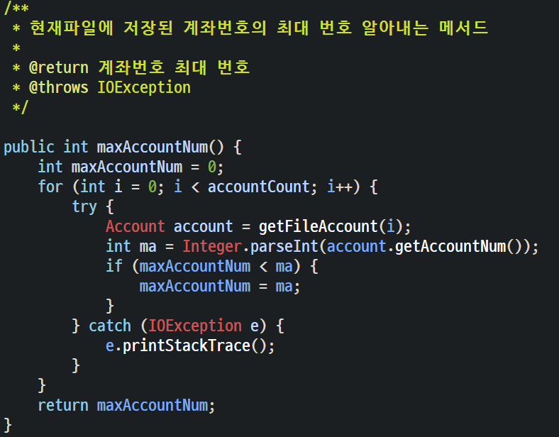

About Me

인적사항
이 름: 조 영 호
전 화 번 호: 010 - 4373 - 1334
이 메 일: dudgh114 @ gmail.com
학력 / 교육력
경복대학교 복지행정과 졸업
[스마트웹&콘텐츠개발]풀스택 자바웹개발자_혼합E 수료 예정
Skill
java
javaScript

SQL/PLSQL
AMS
Console출력
Console
Main
Function
계좌 생성 및 등록
계좌목록 조회
입금(상환)
출금(상환)
Console
selectAccountType() 수정전
Comment
계좌 생성시 계좌 타입마다 메소드를 따로 만들어 관리 하였음.
selectAccountType()에서 각 메소드를 실행했으나 중복 코드가 많아 메소드를 한개로 합쳐 boolean값으로 타입을 선택하게 함.
createAccount()
createMinusAccount()
createAccount(boolean)

selectAccountType() 수정후
Console
showAccounts() 수정전
showAccounts() 수정후
Comment
Account의 배열을 이용하여 계좌를 불러와 instanceof연산자를 이용하여 일반계좌, 마이너스계좌 구분하여 목록에 출력 하였음.
List콜렉션에 Account객체만을 넣고 향상된 for문으로 목록에 출력 하는 것으로 코드를 수정 하였음.
Console
depomoney()
depomoney() 트러블
CASE 1
반환타입이 Account인 메서드 결과를 MinusAccount의 참조변수에 담으려 했으나 convert오류가 발생.
반환된 결과를 MinusAccount타입으로 강제 형변환 시킴.
CASE 2
(입금금액+getRestMoney)를 totalMoney변수에 담고 출력. 입금 시 잔액표시가 출력되지만, 목록조회 시 입금이 안됨.
deposit() 메서드를 활용하여 restMoney를 초기화 해주고 getRestMoney로 잔액 출력함.
Console
.png)
withdrawMoney()
Comment
초기 구상 시 예외 없이 입력을 받았음.
예외처리(try, catch)를 배우고,
출금(대출) 금액이 0이거나 음수이거나 잔액보다 많이 출금 하면 에러메세지 출력하게끔 수정 함.
AMS(console) 느낀점
처음 수업을 시작하고 과제로 내주신 프로젝트 입니다. 혼자서 어렵기도 했지만 날마다
5~6시간씩 고민하여 코드가 완성 되었을 때는 정말 기분이 좋았습니다.
새로운 문법을 배울 때 마다 코드가 간결해지며 깔끔해질 수 있는것을 몸소 배울 수 있는 기회
였고 객체지향에 대해 복습할 수 있었습니다.
AMS
GUI 출력
Console
Main
Function
전체계좌 조회
계좌번호 조회
예금주 조회
계좌등록
계좌삭제
GUI Making1

GUI Making2
GUI Making3
EventListner()
component 배치
TF유효성검사
Varidate클래스
GUI
TF변화메소드
Comment
선택된 항목에 따른 택스트 필드의 able, disable구현
계좌번호 조회
예금주 조회

searchAcc()
Comment
boolean 값으로 계좌번호검색인지 예금주명검색인지 나뉘도록 코드를 작성함. repository에 있는 search메소드들은 AMS콘솔때와 코드가 같음.
searchAcc() 트러블
CASE 1
예금주명으로 찾는 메서드의 경우 리턴타입이 List
List를 배열타입으로 바꾸는 .toArray로 바꾼뒤, .toString을 호출 하니 원하는 포멧으로 출력 됨.
repository의 interface

GUI
addAccount()
addAccount() 트러블
case1
비밀번호를 int형으로 받아서 validator클래스로 유효성 검사 못함.
유효성 검사를 위해 String 타입으로 passTF의 값을 한번 더 받아서 검사 진행하고 TF가 모두 유효할 경우 int형으로 다시 받음.
GUI
deleteAccount()
GUI
exit()
AMS(GUI) 느낀점
AWT 수업을 배우고 과제로 내주신 개인 프로젝트 입니다. GridBagLayout을
이용한 배치가 처음엔 이해 안됬지만, Excel도 열어보고 직접 셀디자인을 하며 배치에 신경을 많이 썼습니다.
물론, 각 버튼에 알맞은 코드를 제작 하는것도 어려웠습니다.
특히 이벤트처리에 대한 연습이 될 수 있어서 좋은 경험 이었습니다.
AMS
RandomFileAccess저장
Console
File
Function
전체계좌조회
계좌번호조회
예금주조회
계좌등록
계좌삭제
FileAccountRepository
Comment
파일에 저장될 Account객체 한개의 바이트길이를 정하기 위해 속성에 각각 상수를 지정하고 전부 더한 최대 바이트길이를 또 상수로 지정해줌.
또한 생성자에서 파일의 길이가 0이 아닐시 계좌가 있는거니 계좌 갯수를 표현하는 변수인accountCount의 수를 1씩 늘려 계좌가 최대 몇개만들어 져있는지 저장해둔다.
getFileAccount()
Comment
파일에 저장된 Account객체의 전체바이트수를 읽어와 속성값으로 설정된 상수씩 읽어 해당 하는 속성에 집어넣고 Account객체를 생성해 반환해주는 메소드이다.
받는 인자가 int index인것은 루프를 돌면서 파일의 모든 Account계좌 바이트길이를 객체화하기 위함이다.
트러블
CASE1
처음엔 순서 상관없이 생각나는속성 먼저 바이트를 읽어왔으나 엉뚱한결과 값이나옴.(윗사진이 등록시 순서, 아랫사진이 마구자비로 읽어온 순서)
계좌를 파일에 저장시 입력한 순서와 읽어들일 때의 순서가 같아야지 의도한 값이 들어오게끔 되어있음. 같은 순서로 읽어와 해결함.
GUI
getAccounts()

Comment
이 메소드가 하는 일은 앞서 소개한 getFileAccount(int index)메소드를 이용해 루프를 돌며 어카운트계좌를 생성하여 콜렉션 List에 담아 반환해 주는 기능을 갖고 있다.
GUI
searchAccount()
Comment
입력받은 계좌번호로 계좌를 검색하는 기능을 갖고 있다.
마찬가지로 getFileAccount(int index)메소드를 이용해 어카운트계좌를 생성하여 해당 어카운트객체의 계좌번호와 일치하면 해당 어카운트객체를 반환함.
GUI
searchAccountOwner()
Comment
입력받은 예금주명으로 계좌를 검색하는 기능을 갖고 있다.
계좌번호로 계좌검색과 거의 유사하지만 동명이인이 있을 수 있어 반환타입이 콜렉션List이다. 이름이 같을경우 콜렉션에 담아 반환된다.
addAccount()
File
Comment
입력받은 기본 정보들을 바이트화하여 파일에 써내려가는 메소드이다.
계좌번호는 계좌가 없으면 1000부터 시작하고 있으면 +1하게끔 최대 계좌번호를 반환받는 메소드를 이용해 계좌번호를 설정함.
처음에 설정한 상수값을이용하여 파일포인터를 이동시켜 속성 하나하나를 파일에 써내려감.
작업이 끝나면 파일포인터를 accountCount가 적힌 0번째로 이동시켜 accountCount도 1증가시킨 값으로 업데이트함.
deleteAccont()
File
Comment
입력받은 계좌번호로 계좌를 삭제하는 기능을 갖고 있다. 현 화면에선 1007번을 삭제한 파일상태이다.
의외로 엄청난 시간을 쓰게 만든 장본인이다. 삭제를 어떻게 구현할것인가 고민을 해야한다.
수많이 시도한 뒤 선택한 방법은 해당하는 계좌를 찾으면 파일포인터를 해당계좌의 제일뒤에 두고, 그뒤의 모든 남은 바이트를 읽어들인다음 해당계좌의 맨 처음으로 파일포인터를 옮긴뒤 읽어들인 남은 계좌들을 거기에 덮어 씌우는 식으로 구현함.(빈공간을 없앰과 동시에 해당 정보 삭제)
AMS(RandomFileAccess저장) 느낀점
메모리상의 데이터가 아닌 영속적인 데이터의 저장을 위한 첫걸음으로 FileSystem에 대한 공부를 시작하게되었습니다. 수업 마지막에 ObjectStream과 RandomFileAccess를 배우고 한 프로젝트입니다.
선생님께서 둘중 하나로 영속적인 저장을 구현해보라고 하셨을 때 랜덤파일의 경우 read와 write를 동시에 할 수 있는것에 혹해 도전하게 되었습니다.
생각보다 많이 어려웠지만 바이트형식의 저장은 흥미로웠고 GUI프로그램 종료후에도 데이터가 저장되는것이 신기한 경험이었습니다. 파일에 접근해 읽고 쓰는것에 조금 익숙해 질 수 있는 시간이었습니다.
AMS
DataBase 연동
테이블 구조
제약조건 추가
계좌번호 시퀸스
Comment
기본적인 기능은 앞의 AMS프로젝트와 동일하며, 저장시스템을RandomFileAccess에서 oracle의 DataBase로 바꾼 미니 프로젝트 임.
해당 프로젝트설명에선 GUI생략하고 변경되거나 추가된것을 기술함.
코드를 변경하기 전 오라클에 어카운트객체를 저장하기 위한 테이블을 생성하고 계좌번호 시퀸스 추가
addAccount()1
addAccount()2
Comment
신규 계좌 받아 테이블에 넣는 쿼리생성해 DB로 보내는 메서드이다.
등록하는 어카운트 타입이 어떤건지 instanceof로 구분하고 account_id의 값으로 1(일반)과 2(마이너스)를 넣어줌.
getAccounts()1
getAccounts()2
Comment
데이터에 저장된 어카운트객체들을 리스트에 담아 반환해주는 메소드임.
저장된 account_id에 따라 마이너스계좌나 일반계좌 생성후 리스트에 더해줌.
트러블1
CASE1
마이너스계좌를 어떻게 생성해야하나 고민함.
서로의 차이인 버로우머니를 기준으로 0이면 어카운트따로 0 !=이면 마이너스 따로 생성자 호출해서 각자 생성시켰으나 버로우머니가 제대로 안들어감.
테이블에 account_id를 추가하고 1이면 일반계좌 생성자를 호출 2면 마이너스 계좌의 생성자를 호출하며 강제형변환으로 버로우머니setter호출 하여 등록하게 바꿈.
searchAccount()1
searchAccount()2
Comment
쿼리의 WHERE절에 계좌번호값을 입력후 원하는 계좌를 DB에서 가져오는 메소드.
불러온 값으로 account_id에 해당하는 계좌타입 생성후 리턴해줌.
searchAccountByOwner()1
searchAccountByOwner()2
Comment
예금주의 경우 동명이인이 있을 가능성을 고려해 반환타입이 List이며 와일문으로 계좌를 생성해 List에 담은 후 반환해줌.
deleteAccount()

close()
Comment
입력받은 계좌를 쿼리의 WHERE절에 넣어주고 해당하는 계좌정보를 삭제하는 메소드이다.
트러블2
여지껏 나온 모든 메소드가 finally에서 커넥션.close()를 해주었는데 그로 인해 아무 메소드나 실행 되자마자 서버와의 연결이 끊겨 다음 작업을 하지 못했음.
close()메소드를 추가해 GUI에서 종료버튼을 눌렀을시 호출되도록 수정하여 해결함.
AMS(DataBase 연동) 느낀점
SQL 수업을 배우면서 과제로 내주신 개인 프로젝트 입니다. 쿼리문을 통해 여러가지의 데이터를 조회하는 방법이 있으며 여러 종류의 쿼리문 종류가 있는것 을 배웠습니다.
선생님께서 저번에 파일로 저장한 계좌정보를 이번엔 DB에 넣어서 영속적인 저장을 해보자고 하셔서 시도하게 되었습니다. 처음엔 DB와의 연동이 이해가 잘 되지 않았지만 코드를 작성하다보니 영감이 떠올라 생각보다 금방 하게 되었던 미니 프로젝트였습니다. 덕분에 DB와의 연동에 자신감이 생길 수 있던 프로젝트였습니다.
To_Projects학생성적관리 웹
성적관리 웹
공사중
GUI Making1
GUI Making2
GUI Making3
EventListner()
component 배치
TF유효성검사
Varidate클래스
GUI
TF변화메소드
Comment
선택된 항목에 따른 택스트 필드의 able, disable구현
계좌번호 조회
예금주 조회
searchAcc()
Comment
boolean 값으로 계좌번호검색인지 예금주명검색인지 나뉘도록 코드를 작성함. repository에 있는 search메소드들은 AMS콘솔때와 코드가 같음.
searchAcc() 트러블
CASE 1
예금주명으로 찾는 메서드의 경우 리턴타입이 List
List를 배열타입으로 바꾸는 .toArray로 바꾼뒤, .toString을 호출 하니 원하는 포멧으로 출력 됨.
repository의 interface
GUI
addAccount()
addAccount() 트러블
case1
비밀번호를 int형으로 받아서 validator클래스로 유효성 검사 못함.
유효성 검사를 위해 String 타입으로 passTF의 값을 한번 더 받아서 검사 진행하고 TF가 모두 유효할 경우 int형으로 다시 받음.
GUI
deleteAccount()
GUI
exit()
AMS(GUI) 느낀점
AWT 수업을 배우고 과제로 내주신 개인 프로젝트 입니다. GridBagLayout을
이용한 배치가 처음엔 이해 안됬지만, Excel도 열어보고 직접 셀디자인을 하며 배치에 신경을 많이 썼습니다.
물론, 각 버튼에 알맞은 코드를 제작 하는것도 어려웠습니다.
특히 이벤트처리에 대한 연습이 될 수 있어서 좋은 경험 이었습니다.
Web Portfolio
웹페이지형 포트폴리오
공사중
GUI Making1
GUI Making2
GUI Making3
EventListner()
component 배치
TF유효성검사
Varidate클래스
GUI
TF변화메소드
Comment
선택된 항목에 따른 택스트 필드의 able, disable구현
계좌번호 조회
예금주 조회
searchAcc()
Comment
boolean 값으로 계좌번호검색인지 예금주명검색인지 나뉘도록 코드를 작성함. repository에 있는 search메소드들은 AMS콘솔때와 코드가 같음.
searchAcc() 트러블
CASE 1
예금주명으로 찾는 메서드의 경우 리턴타입이 List
List를 배열타입으로 바꾸는 .toArray로 바꾼뒤, .toString을 호출 하니 원하는 포멧으로 출력 됨.
repository의 interface
GUI
addAccount()
addAccount() 트러블
case1
비밀번호를 int형으로 받아서 validator클래스로 유효성 검사 못함.
유효성 검사를 위해 String 타입으로 passTF의 값을 한번 더 받아서 검사 진행하고 TF가 모두 유효할 경우 int형으로 다시 받음.
GUI
deleteAccount()
GUI
exit()
AMS(GUI) 느낀점
AWT 수업을 배우고 과제로 내주신 개인 프로젝트 입니다. GridBagLayout을
이용한 배치가 처음엔 이해 안됬지만, Excel도 열어보고 직접 셀디자인을 하며 배치에 신경을 많이 썼습니다.
물론, 각 버튼에 알맞은 코드를 제작 하는것도 어려웠습니다.
특히 이벤트처리에 대한 연습이 될 수 있어서 좋은 경험 이었습니다.
게시글
자유롭게 글을 남겨 주세요.
${memo.content}